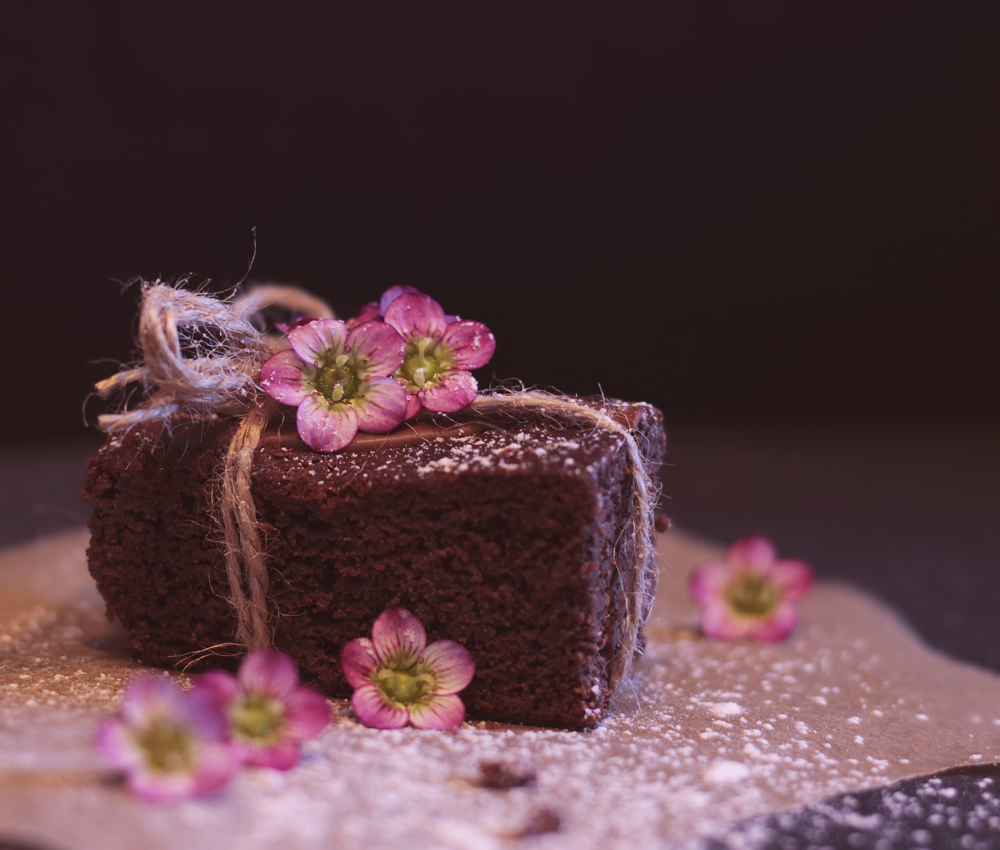

Pähkinäinen brownie

Tämä Amerikasta kotoisin oleva tuhti herkku vie kielen ja sydämen mennessään. Alkuperäinen ohje on löydetty Valiolta.
Raaka-aineet
- 100 g tummaa suklaata
- 1,5 dl vehnäjauhoja
- suolaa
- 1 tl leivinjauhe
- 1 tl vaniljasokeri
- 100 g voi tai margariini
- 2 kpl kananmunia
- 0,5 dl maitoa
- 70g saksanpähkinöitä rouhittuna (tai muita pähkinöitä oman maun mukaan)
Valmistus
- Voitele vuoka (halk. n. 20x25cm) valmiiksi ja laita uuni lämpeämään 175 asteeseen.
- Vaahdota pehmeä voi/margariini ja sokeri.
- Vatkaa munat joukkoon yksitellen.
- Sulata suklaa varovasti mikrossa tai vesihauteessa. Lisää se jäähtyneenä seokseen.
- Sekoita kuivat aineet sekä pähkinät keskenään ja lisää ne vuorotellen maidon kanssa taikinaan.
- Kaada taikina vuokaan ja tasoita pinta.
- Paista n. 25-30 minuuttia. Anna hetken jäähtyä ja kumoa kakku vuoasta.
- Syö sellaisenaan tai tarjoa kermavaahdon tai vaniljajäätelön kera.